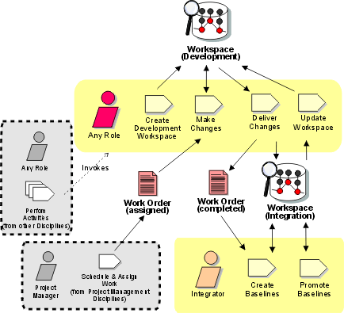

Disciplines >
Disciplines >
 Configuration & Change Management >
Configuration & Change Management >
 Workflow >
Change and Deliver Configuration Items
Workflow >
Change and Deliver Configuration Items
Disciplines >
Configuration & Change Management >
Workflow >
Change and Deliver Configuration Items
Workflow Detail:
|
Topics
|
 |
The purpose of this workflow detail is to describe:
"Any Role" represents any Rational Unified Process (RUP) Role, from the sets of roles (Analysts, Developers, Testing Professionals, Managers, or Additional Roles), that is part of the project team, and may want to make changes to a RUP Artifact (Configuration Item).
The Integrator (as described in other Workflow Details) needs to be sure that
artifacts delivered from the developer workspaces are sufficiently tested such
that they can be incorporated into a testable build. The Integrator needs to be
familiar with Project CM Policies and Test Practices.
|
Rational Unified
Process
|